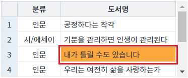

[GridView] 선택된 열 또는 행의 인덱스 반환받기
1개요
GridView의 선택된 열 또는 행의 인덱스를 반환받는 예제입니다.
다음의 GridView 함수로 구현할 수 있습니다.
getFocusedColumnIndex: 포커스된 셀의 열 인덱스를 반환. 포커스된 열이 없으면 null이 반환됩니다.
getFocusedRowIndex: 포커스된 셀의 행 인덱스를 반환. 포커스된 행이 없으면 -1이 반환됩니다.
2구현된 기능
선택된 열의 인덱스 반환받기
선택된 행의 인덱스 반환받기
3예제 테스트 방법
3.1선택된 열의 인덱스 반환받기
STEP 1. 초기 상태를 확인합니다.
GridView의 컬럼 '도서명'의 3번째 행이 선택된 상태입니다.
그림 1.브라우저(Chrome) 실행 예시

STEP 2. 선택된 열의 인덱스를 확인합니다.
버튼 선택된 열의 인덱스 반환받기를 클릭합니다.STEP 3. 실행된 결과를 확인합니다.
열의 인덱스가 브라우저 alert으로 출력됩니다. 출력 값 : 'focusedColumnIndex : 1'
그림 2.브라우저(Chrome) 실행 예시

3.2선택된 행의 인덱스 반환받기
STEP 1. 초기 상태를 확인합니다.
GridView의 컬럼 '도서명'의 3번째 행이 선택된 상태입니다.
그림 3.브라우저(Chrome) 실행 예시
STEP 2. 선택된 행의 인덱스를 확인합니다.
버튼 선택된 행의 인덱스 반환받기를 클릭합니다.STEP 3. 실행된 결과를 확인합니다.
행의 인덱스가 브라우저 alert으로 출력됩니다. 출력 값 : 'focusedRowIndex : 2'
4구현 예시
4.1선택된 열의 인덱스 반환받기
GridView의 함수 'getFocusedColumnIndex'를 이용하여 스크립트를 작성합니다. 세부 지정은 아래의 스크립트 예시에 작성되어 있습니다.
스크립트
//예제 파일에서는 스크립트 scwin.btn_exam1_1_onclick에 작성되어 있습니다. // GridView 'grd_exam'의 선택된 열의 Index를 반환 받습니다. // 선택된 열이 없으면 null이 반환됩니다. let colIndex = grd_exam.getFocusedColumnIndex();
4.2선택된 행의 인덱스 반환받기
GridView의 함수 'getFocusedRowIndex'를 이용하여 스크립트를 작성합니다. 세부 지정은 아래의 스크립트 예시에 작성되어 있습니다.
스크립트
//예제 파일에서는 스크립트 scwin.btn_exam1_2_onclick에 작성되어 있습니다. // GridView 'grd_exam'의 선택된 행의 Index를 반환 받습니다. // 선택된 행이 없으면 -1이 반환됩니다. let rowIndex = grd_exam.getFocusedRowIndex();
5주요 API
getFocusedColumnIndex( )
getFocusedRowIndex( )
getFocusedColumnID( )
getFocusedRowStatus( )
removeFocusedCell( )
6참고 문서
[웹스퀘어5 SP5 개발 가이드] GridView
링크 : https://docs1.inswave.com/sp5_user_guide/86bdcf48029b958b